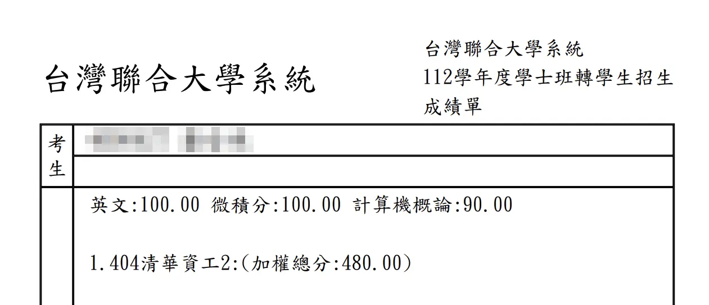

2023 台聯大轉學考 - 記錄檔
Last updated on August 16, 2023
Contents
前言
這是一篇筆者用來記錄自已大一轉學考的文章，接下來會依照以下的架構娓娓道來：
- 結果
- 報考組別、科系
- 分數、上榜與否
- 銘謝
- 資源一覽
- 準備
- 原始學校
- 已知條件
- 準備方式
- 使用的書
- 心態（包含問題：要不要顧學校？）
- 心路歷程
- 前期
- 中期
- 後期
- 考試當天
- 考試後到放榜
正文
結果
成績
報考台聯大 A4 清大資工，分數如下：

結果：正取
銘謝一覽
- 感謝家裡支持我參加考試，也一直提供經濟支援讓我能買有點小貴的參考書們還有報名費。
- 感謝跟我一起讀書的那位朋友，有了位戰友讀書時也不會那麼寂寞，教你的過程中我也是收穫良多，最後還請我吃飯肯定要找時間回請你的，欸嘿。
- 感謝高中的某位社團朋友，跟我聊了很多心事，解決了在中期時因為其他事情影響的備考不確定性，也堅定了我的目標。
- 感謝一位帶我之前遊歷新竹的好朋友，那次玩得超級充實的，也讓我這次重返新竹時重拾對環境的熟悉感，蠻心安的；這肯定也是要請吃飯的環節 owo。
- 感謝高中班導的近況關心，是時候在這個暑假回去探班了ｗ。
- 最後也要感謝筆者自己在備考過程中付出的努力，同時顧好心理健康沒有重蹈覆轍。
資源一覽
因為不想讓看這篇文的人在文章中慢慢找或是根本找不到，所以就先把推薦的資源放在這邊：
微積分
- 參考書
- 微積分學習要訣 第22版, 劉明昌博士
實體書，$792
- 微積分學習要訣 第22版, 劉明昌博士
- 考古題＆解答
- 微積分111~106年歷屆試題詳解, 劉明昌博士
實體書，$800 - 102-111年大轉微積分歷試詳解免費提供, 喻超凡老師
電子檔
- 微積分111~106年歷屆試題詳解, 劉明昌博士
- 參考書
計概
- 原文書
- Foundations of Computer Science 4/e, Behrouz Forouzan
實體書，$1088 | 電子檔 - Computer Science: An Overview 13/e, Dennis Brylow and J. Glenn Brookshear
電子檔
- Foundations of Computer Science 4/e, Behrouz Forouzan
- 參考書
- 計算機概論 重要題型 • 完全攻略, 蕭雄文
實體書，$480
- 計算機概論 重要題型 • 完全攻略, 蕭雄文
- 考古題＆解答＆筆記＆超多東西
- 轉考電腦科學討論區
Band 社群
- 轉考電腦科學討論區
- 原文書
英文
- 考古題＆解答
- 台綜聯大轉學考英文用書, 李盛光
實體書，$865
- 台綜聯大轉學考英文用書, 李盛光
- 考古題＆解答
有關如何查到原文書的電子檔，請見：附錄：如何找原文書電子檔
準備
筆者在學測時數學炸開，最後選擇先用個申申請上中央資工，並以轉學考作為短期目標。此外，因為以下幾點，筆者選擇以 自讀 台聯大作為目標：
- 筆者的文科顯然不行[1]。
- 中央資工最近幾年竟然沒有必修普物，筆者的物理又忘得差不多了[2]。
- 筆者在高二自學過微積分；雖然數學在學測時炸了，但微積分仍然蠻拿手的 owo[3]。
- 英文學測 15 級，有欠缺的話也是單字的問題，要自學的話應該在能力範圍內。
- 純粹不想在自己沒有真正想要補習的心態下去補[4]。
接下來說說筆者使用的參考書們以及心態。當初在準備前筆者也是去網路上查了很多心得文，最後選擇使用這篇文章中介紹的書，各科選擇的參考書如下：
微積分
- 微積分學習要訣 第22版, 劉明昌博士
前中後期皆有使用；雖然初期有點不符合筆者的口味，有時候也會跳過一些筆者認為必須要解釋的東西，但中後半的內容寫得蠻好的，大推！
- 微積分111~106年歷屆試題詳解, 劉明昌博士
中、後期使用
- 微積分學習要訣 第22版, 劉明昌博士
計概
- Foundation of Computer Science 4/e
前中後期皆有使用；剛好是中央資工的計概用書
- Computer Science: An Overview 13/e, Dennis Brylow and J. Glenn Brookshear
中、後期使用
- 計算機概論 重要題型 • 完全攻略, 蕭雄文
中、後期使用；其中綜合了多所學校的計概考題，可以作為補充資料使用
- Foundation of Computer Science 4/e
英文
- 臺綜聯大轉學考英文用書, 李盛光
中、後期使用；內容為考古題 + 詳解，也有附上相當多的文法解釋，大推
- 臺綜聯大轉學考英文用書, 李盛光
在心態上，因為筆者在國中讀會考時曾經讀到走火入魔，犧牲了自己的身心健康，所以在學測＆這次考試時都不想要像上面那篇文中的做法一樣：
放棄在校成績拉低GPA、大二的選課完全亂選、沒有宿舍也沒找房子，一天讀18小時犧牲睡眠、犧牲自己健康，讀到崩潰，雖然這樣很冒險，但我不想給自己任何退路，破釜沉舟，就為了往更好的學校邁進。
– 引自原文
筆者在校科目除了國文之外基本上都有顧。雖然因為不想對中央有所留念，完全放棄了系上活動與社交，連系服都沒有買；但還是有跟室友交朋友，該選大二宿舍時也跟室友一起組房，該選大二課時也有仔細選。所有的所有，就是為了給自己留條可以發展的後路。
之所以可以這麼做，筆者覺得是因為中央資工是有一定的水準，課程上並不會需要擔心系上的專業課程會不會是水課，教授了與轉學考相去太遠且無用的內容；同時因為是同系轉，顧好在校成績就相當於在讀考試科目了[5]。只是礙於筆者評估將來要研究的量子相關可用資源與教授在中央並不算多，所以打算轉學。如果是不同系轉的話，可以評估一下自己需不需要參考文章中的方式。
此外，筆者在讀書時注重的也是過程而非結果；因為即使結果好壞，如果在過程中有做出符合自己人格標準的努力，那代表自己也是有所成長，並不需要也不必要否定自己在備考期間的一切努力[6]。
在選課上，筆者上學期還是有選一堂天文學導論（好課大推，可以學到很多東西！）；但下學期因為必修學分就已經 20 多了，也想要把心思轉移到轉學考上，所以就沒有再多選課（不然原本是想要選普通心理學的說）。
更多準備過程的詳細資訊，請見接下來的心路歷程流水帳。
心路歷程
這邊的內容全部都是依靠回憶寫出來的；時間有關的資訊不會是完全可靠的（除了有明確寫出數字的部分），如果覺得怪怪還請不要參考，並自行安排。
前期（上學期）
雖然不太重要，先說一下筆者在算數學的時候是紙筆派，全部都是用計算紙算的。前期平平凡凡，幾乎每天都在讀微積分學習要訣，快速刷過一遍（每單元的習題除了考研的題目之外都有寫），到上學期中的時候就已經剩下原本在學校課程上排在下學期的雙重積分之後的所有章節。但在這之後，筆者就先跑去弄到那時候都還只有跟著學校進度的計概；先把計概看到這學期完。上學期結束，完全沒有碰英文 owo。
雖然那時候各科雖然都還沒讀完，但基本上都還是有稍微瞄過去年的考古考了什麼，順便檢查一下自己現在的實力到哪（那時候顯然一堆都還不會寫，尤其是計概）。
中期（寒假到下學期期初考）
上學期的寒假，把微積分的進度重新撿回來，將雙重積分之後的所有章節用 6 天的時間讀完[7]。順便提個有趣的小統計：讀完這本微積分藍色磚頭書總共用了 200多張B5 + 22張A4 的計算紙，以下是筆者讀完之後和它的合照 owo：

差不多在寒假結束前一個禮拜開始看計概的書；因為感覺已經有點來不及了，所以這次目標是訂在期初考前就把所有進度看完（最後也是差不多那個時間簡略掃完）。在開學後買了英文的唯一一本參考書，開始慢慢刷考古，發現果然基本上都是單字的問題，並無大礙。
各科的考古也差不多是在下學期開學後開始刷：計概大爆炸，一堆課內沒有的東西，那時候又找不到計概的考古，發現網路上唯一一本可以用的心誠資料社參考書被負評灌爆[8]，有點小急。幸好最後在 Dcard 的某一篇文中找到了一個 Band 社群 - 轉考電腦科學討論區，裡面真的超級多資源（再貼一次邀請連結）。基本上中後期的計概筆者都是用裡面的資源讀，在此感謝這個社群的創辦者們。
這個時候筆者開始和一位朋友一起約讀轉學考[9]。兩人一起讀書還蠻有用的，這位朋友和筆者剛好可以互補對方不擅長的科目，可以在互相問問題的過程中真正確認自己是否有讀懂這方面的東西[10]；有問題可以互相討論；同時也可以做為一部分的心理支撐，生活上不至於那麼孤獨。
後期（期初考到考試前）
這個時候除了固定刷各科考古題之外（建議每次寫都要計時，確保自己在考試當天有充分的時間可以用來檢查），筆者發現計概其實是最大的問題。微積分有範圍；英文雖然沒有範圍但就只有單字問題；但計概考出來的東西用筆者在課堂上學的知識去解題顯然完全不夠，所以除了詳讀兩本原文書之外，肯定是要自己一題題搜不會或是根本沒看過領域的題目。較進階的那本原文書教的東西與解釋方式比筆者上課用的那本還要好很多，推推 uwu。
但計概讀到最後會開始不知道自己在讀啥，所以筆者轉而開始統計自己在考古中錯的章節，並依照錯誤題數一個一個慢慢細讀。一章可能就要讀一個禮拜或是以上，但收穫頗富，弄懂了之前因為快速掃過而沒有很懂的東西，像是 Security 底下的 Entity Authentication[11]，也學到了網路的新知識（這次轉學考剛好有考出來）。
考前前兩個禮拜時突然心態小炸，但幸好發現了一篇筆者之前沒有看到的 Dcard 心得文，有重新把心態撿回來，重回正軌。
讀到最後考前一個禮拜，其實筆者已經開始沒有在讀什麼書了，除了刷剩下的英文考古之外就是等朋友問我問題；然後某天甚至還跑去做了個奇怪的含自迴神經網路[12]，也有跑去逛逛 Minecraft 底層程式碼。筆者也是差不多在這時候跑去訂考前前一天要住的飯店[13]。新竹火車站周圍的飯店那時候竟然已經沒有單人房了，最後訂到的是這家：
1 | |
沒有評很高是因為櫃台環境與浴室，但筆者忘記拍它浴室的樣子了。同時評分也是跟筆者之前在個申時住的旅店相比，覺得蠻有差的。但服務人員態度真的很好，推這點。
這邊就容筆者偷懶不細說考前前一天場勘流程 owo，附上幾張當天拍的旅店內部：


最後小小拉回來一下，筆者基本上各科考古都只有刷台聯大近10年內，計概有刷到一點台綜的題目，但台綜出題方向真的跟台聯大相差太多了，所以到後期就沒有再寫了。微積分在後期時也有寫了 111、109 的台大C卷，但一份的量真的太多（差不多等於 2.5 ~ 3 份台聯大的題目）；那時候的目的也只是複習，筆者決定寫完這兩份就先停止，不要把時間耗在這上面。
考試當天
考試當天 6:49 就從旅店出來，剛好趕上 6:50 的 182，搭到光復中學站去對面的全家吃早餐 + 預先買好午餐[14]，吃完之後順著機車塔旁小徑一直直走，到盡頭時右轉再直走就是考場 - 台達館[15]。

順帶一提，當天天氣是典型的夏天，熱到走幾步路就會直接飆汗的那種。筆者考場在二樓，上二樓之後發現幾乎所有人都在看書，但筆者卻悠閒地逛了一圈之後再回來，順便確認洗手間位置（場勘時忘記先看大樓內部了）。筆者稍微再看了一下幾個常常忘記的級數展開，就進去考試了。
教室（考場）裡面課桌椅品質優良，有冷氣，光線充足。考試前 5 分鐘會搖鈴（預備鈴），然後教室門就會開，可以開始進場。進場之後的注意事項如下（幾乎都是監考老師宣佈的內容）：
- 不行 碰到或 翻閱 桌上的試題本與答案卷，但可以先拿出你等一下會用到的文具並放在桌上。
- 要先在教室前面的臨時置物區放好你的背包，切記手機一律要關機且 不行放在身上。
- 確認位置上的 姓名與准考證號是否正確，並將身分證放在桌子的右上角，待稍後核對時用。
- 考場內禁止喝水。
再過 5 分鐘鈴響後就可以開始作答[16]。筆者在這邊呼籲大家真的要檢查，筆者在考微積分時檢查出來 3, 4個錯，全部改掉惹 owo。上午考的依序是微積分、計概，都考 80 分鐘；下午就考英文（今年英文簡單到炸開），考 60 分鐘。快中午時筆者看一堆人都提早交計概考卷，雖然今年的計概是用中文出題，但有幾題顯然是難到炸開，根本不可能提早交卷，猜他們可能是想要先去搶還沒有那麼多人的店家吃午餐。筆者出考場之後發現果然人超少，於是就靜靜在那邊吃完午餐就小睡 25 分鐘，再起來閒逛吹風（不然真的會熱死）。
下午時考英文無大礙，順利過關提早交卷，出來時一身輕。雖然那天考試時基本上就是平常心，但是是不允許出任何差錯的平常心，所以壓力還是很大。所以其實也沒有很輕，逛了校園[17] 10 幾分鐘後就突然超級累，而且還要搭交通工具回台北，更累了qq（近期內從來沒有那麼累過，就算備考時也是）。
考試結束後到放榜
考試完隔天發現原本預定當天才會發的解答其實昨天就先偷偷發了，對完後發現計概竟然只有錯兩題，比前一天算出來的期望值還要低，而且 Scheme 程式語言那題還有 IP 不夠的那題竟然 有邏輯地猜對，太幸運了！英文沒錯，微積分有一題題意不清，先不理它。在網路上搜尋題目時，筆者發現今年幾題特難的題目（像是 Scheme 語法、同子網域的 IP）其實是從去年的公務人員特考把考題改一下之後就直接拿過來出題教授甚至沒有把題目翻成英文。
但整體下來，筆者發現自己考完後並沒有像當初預定好的 不對答案、遊戲玩爆 那樣，反而超級緊繃，直到在 Dcard 上看了其他考生的想法之後才釋懷。開始嘗試放下所有考試相關的心態，學習如何讓自己享受玩遊戲的過程（幾個月沒有碰了，有點生疏）。
這幾天跑來寫這篇文，希望能覆蓋到過去其他心得沒有講到的東西（雖然沒辦法提供讀書方式，因為就連筆者也不知道自己的讀書方式是甚麼 owo）。同時因為這篇文可能會有倖存者偏差的疑慮，就算正在讀文章的你對自己這次考試的結果不滿意，但覺得自己過程中的努力還是有用的，就來寫紀錄文吧！
後記
這篇文章沒有太多照片是因為筆者場勘＆考試當天沒有花太多心思在拍照上，雖然筆者原本就很少會拍照就是惹 owo。
等成績公布、寫好這篇文、放榜、安頓好情緒之後，也是時候重新拾起人際關係交際、重新安排接下來的修課與人生目標啦。如果有上的話，也要請一下室友吃飯，畢竟之後可以見到面的機會可能不會很多，可能要做一下暫時的道別。
最後祝福看到這篇文的考生都可以依照自己的步調慢慢讀書，在最後考場上正常發揮。
那麼，就醬。
贈書啦！
贈書活動已結束，謝謝各位！
收信用 Google 帳號已於 2023/08/16 11:39 AM 進行刪除。
因為筆者已經不會再用到參考書們了，與其留在家裡還不如拿出來送有需要的人！
送哪幾本
有備註書況，基本上皆無缺頁、破損
- 微積分學習要訣 第22版, 劉明昌博士
已有候選人- 除了幾題問題真的很大有直接寫在書上之外，99% 的頁數都是空白無計算痕跡。
- 有些之前有問問題的頁數可能會有小折角
- 微積分111~106年歷屆試題詳解, 劉明昌博士
已有候選人- 大部分的頁數應該都沒有被動到（因為筆者只有看台聯大的部分）
- 應該是無計算過程，但隱約記得好像有小小修正幾題的答案（解答給錯的部分）
- 計算機概論 重要題型 • 完全攻略, 蕭雄文
已有候選人- 使用情況是這幾本中最差的一本
- 因為筆者計概太多東西不會所以充滿了複數摺頁
- 計算過程和答案是直接寫在書上，貫穿整本無一倖免
- 台綜聯大轉學考英文用書, 李盛光
已有候選人- 107 ~ 101 年的台聯大都有使用痕跡（答案、更正有直接寫在上面）
- 有問題的地方一樣有摺頁或是其痕跡
因為 Foundations of Computer Science 4/e 是筆者的教科書，而筆者一直以來都會保留教科書，所以沒有打算贈出 owo。
規則
候選人的部分：優先度依照電子郵件傳送到 give.me.that.textbook0174@gmail.com[18] 的時間先後排序，信件內容需包括索取的書名，如未包含將自動忽略。
取書方式：
- 面交，範圍為台北市內捷運站（不包含機捷、輕軌）附近，需由候選人本人前往領取，不須負擔額外費用。
- 利用 7-11 的店到店服務（範圍為台灣本島），須負擔全額運費。
確認候選人後，會回信詢問取書方式（店到店會詢問收件者姓名、電話、目標門市；面交的話會協調捷運站點），並會將每本書是否已有候選人的狀態更新在此文中。如有人放棄、或是不符合上述規定，會依照電子郵件時間序次位進行遞補。
資料保護
來信者資料會受到基本的個人資料保護：
- 不獲取非必要資料（如身分證字號）
- 不將資料外洩給任何人
- 不以任何形式記下於電子信箱外之載體（於排序候選人、店到店過程需要時除外）
- 贈書活動結束後將刪除電子郵件帳號，期間不進行任何形式的備份
- 不將資料用於任何違反風俗習慣或是濫用之行為。
附錄：如何找原文書電子檔
- 可以去名叫 Library Genesis 的網站（這個網站的網址不固定）用原文書的名字查書，並且注意版本。
- 有些人也會把電子檔放在 Github 上，可以用原文書名 + github 作為關鍵字查詢。
- 下載之後建議先上網找掃毒工具掃一下檔案。
- 完結。
不建議以 <書名> + free download 作為關鍵字，太多可能中毒的東西了。
註腳
- 爛到掉渣的那種，國中＆高中都嘗試救過了，但顯然沒興趣 + 救不回來，就連學測國文都是隨便亂猜到12級。之所以有列這個是因為記得不知道哪個單位之前資工系的有考過國文，但今年好像沒有。 ↩
- 那時候去諮詢 + 查資料是發現台綜會考物理，可是後來簡章出來才發現沒有。但其實也沒有差，因為台綜今年的名額根本沒有資工 qwq。 ↩
- 至少微積分上下學期學期成績都滿分（微積分大會考金牌 + 銅牌獎） + 上學期離散 95，下學期工程數學滿分。 ↩
- 筆者覺得自己高中時補習沒有真正好好利用資源，有點像在把錢拿去燒的感覺，花一次就幾萬幾萬超級貴；所以這次考試期間就先嘗試自己讀（雖然參考書費也是蠻貴的，汗）。 ↩
- 上學期是系排一；但下學期，恩，就放成績飛吧 owo（排名還沒出來，但肯定不會是第一，但還是有顧好，加權平均比上學期小低 0.68 分）。在這邊感謝我的數學都在幫我撐 /(_ _)\。 ↩
- 這句話從一位成績中上者說出來顯然沒有說服力（倖存者偏差），但這確實是筆者從高中以來所抱持的長期理念。否則，如果這僅僅是因為考好而在寫心得時隨便套用的一句話，那這將無法成為筆者在學測大挫敗後重回正軌的支柱。考差後無疑是會對自己產生數不盡的自我懷疑與厭惡，但在重拾理智之後，還是需要有理地評估是否需要因為此事而無限上綱地妄自菲薄。筆者覺得每一段經歷都是獨特的，如果不斷地否定經歷、忽略收穫，那也相當於浪費了這段歲月。所以，請給自己更多的信心。 ↩
- 這個時間包括刷習題、理解，但請不要參考筆者的讀書進度；因為在高二時筆者就已經自學過雙重積分了，還是有點印象，所以那部分讀得飛快。 ↩
- 筆者有問過有買這本書的朋友，他說只會給這本書 6 out of 10，因為裡面給錯的答案有點多。 ↩
- 筆者選擇不把自己要轉學考的資訊告訴任何人（ex: 室友、系上的人、朋友）；唯一除了這位跟筆者是高中同班的朋友。 ↩
- 筆者認為如果想要確認自己是否已經弄懂一個方面的知識，最快的方式就是直接找人試著教他看看，如果自己可以清楚表達前因後果與邏輯推理，那就差不多懂大部分了；如果可以用不同的描述方式讓對方聽懂，那就代表精熟。 ↩
- 雖然筆者還是搞不懂 MPEG 不同種 frame 的作用是啥，欸嘿 owo。 ↩
- 想當然爾肯定做爛了，但還是有學到新東西 ↩
- 因為高中社團，筆者養成了在重大事件前一天去場勘的習慣。個申時也是前一天就先去大學看看到考場的動線還有周遭的環境，隔天去的時候會比較安心自若。 ↩
- 筆者不敢去跟其他考生擠中午午餐，而事後從朋友那邊聽到確實是如此，大多時間都要拿去排隊qq。 ↩
- 這是場勘出來的最佳路線，因為台達館離最近的校內便利商店太遠，而且當天熱到炸開，完全不想出去買。 ↩
- 趣事：當天考試時有一科提早了 1 分鐘搖錯鈴，外面的監考老師搖到一半就突然沒聲音了w。 ↩
- 結果還遇到 3 位同班認識的人，笑爛，大家都沒有說www。 ↩
- 放心，這不是釣魚，是筆者剛剛因為怕自己主信箱可能會炸開所以去新註冊的電子郵件。 ↩